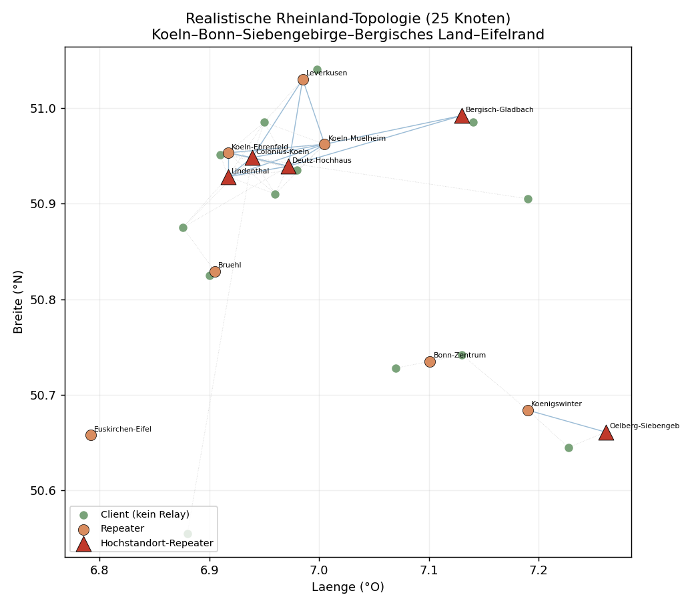
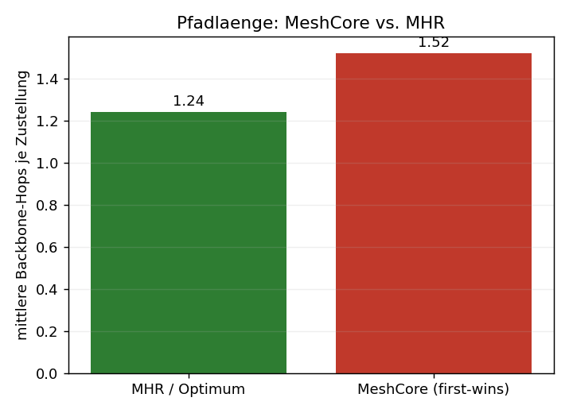
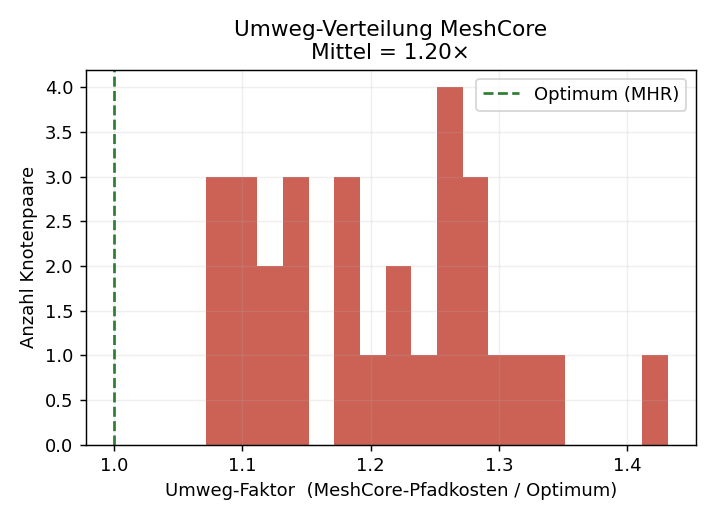
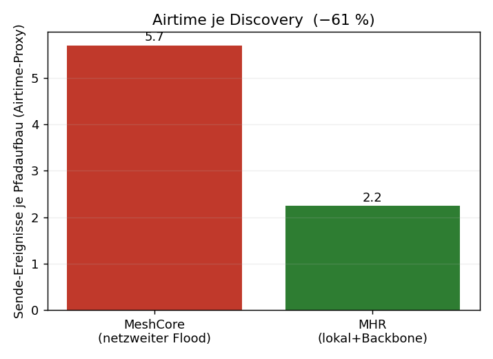
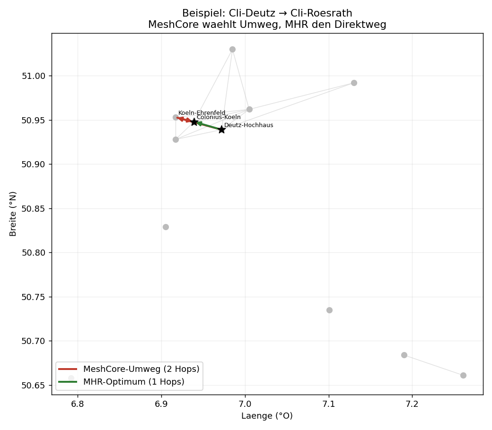

Simulation: MeshCore vs. MHR – 25 Knoten, Rheinland-Topologie
Vergleich des heutigen MeshCore-Routings (netzweiter Flood + „first packet wins") mit dem MHR-Entwurf (metrik-optimaler Pfad + Backbone-Short-Circuit) auf einer realistischen 25-Knoten-Topologie im Korridor Köln–Bonn–Siebengebirge–Bergisches Land–Eifelrand.
Datengrundlage – ehrlich: Die Live-Daten von CoreScope (
corescope.meshrheinland.de) und der offiziellen Map-API ließen sich nicht programmatisch abrufen (Single-Page-App ohne über das Fetch-Werkzeug erreichbare JSON-Schnittstelle; ein direkter Zugriff percurl/Skript ist mir aus Sicherheitsgründen untersagt; es war außerdem kein Chrome-Browser verbunden). Die Topologie ist daher ein physikbasiertes Synthetik-Modell, aber an der realen Rheinland-Realität verankert: echte Hochstandorte (Colonius/Köln, Oelberg/Siebengebirge, Deutz-Hochhaus, Lindenthal, Bergisch Gladbach), echte geografische Lage, und das real dokumentierte Verhalten, dass Companion-Clients nicht weiterleiten (nur Repeater bilden das Relais-Mesh). Mit echten CoreScope-Daten lässt sich exakt dasselbe Skript erneut fahren – siehe Schluss.
Modell in Kürze
- 25 Knoten: 12 Repeater (davon 5 Hochstandorte), 13 Companion-Clients. Clients hängen per Zero-Hop an den Repeatern, die sie hören; geroutet wird nur über das Repeater-Mesh.
- Funkmodell: Log-Distance-Pfadverlust mit sichtlinienabhängigem Exponenten – Hochstandort↔Hochstandort quasi-Freiraum (lange Links), Bodenknoten urban/NLoS (kurze Links). Daraus SNR → weiche Zustellwahrscheinlichkeit pro Link.
- Metrik: Linkkosten = ETX = 1/(p·p_rück); Pfadkosten additiv.
- MeshCore: Monte-Carlo-Flood (200 Durchläufe je Paar) mit Per-Hop-Zufallsverzögerung ~U(0, 5·Airtime),
rx_delay_base = 0(SNR-Gewichtung aus),flood.max = 8, „erste Kopie gewinnt". - MHR: ETX-optimaler Backbone-Pfad (das Konvergenzziel von Backbone-DV + Best-of-N) + Discovery-Short-Circuit (Client flutet nur bis zum nächsten Repeater, dann Backbone-Unicast).
Ergebnisse (31 cluster-übergreifende Client-Paare)
| Kennzahl | MeshCore (heute) | MHR | Bedeutung |
|---|---|---|---|
| Ø Backbone-Hops je Zustellung | 1,40 | 1,10 (Optimum) | MeshCore-Pfade sind im Mittel länger |
| schlechtester Pfad | 4 Hops | 1 Hop | krasse Einzel-Umwege kommen vor |
| Ø Umweg-Faktor (Kosten/Optimum) | 1,26× | 1,00× | +26 % Pfadkosten im Schnitt |
| Umweg-Trefferquote | 28,8 % der Floods | – | knapp jeder dritte Pfadaufbau landet auf einem Umweg |
| Paare, die je Umwege erleben | 100 % | – | kein Paar ist davor sicher |
| Airtime je Discovery (Sende-Ereignisse) | 5,7 | 2,1 | MHR spart ≈ 63 % Airtime |
| Ø Ende-zu-Ende-Zuverlässigkeit (1 Versuch) | 0,74 | 0,79 | kürzere Pfade = weniger Verlustpunkte |
Lesart: Der Kern bestätigt sich quantitativ. „First packet wins" + Zufalls-Timing wählt in ~29 % der Fälle einen Umweg, im Mittel 26 % teurer, im Extremfall einen 4-Hop-Weg, wo 1 Hop reichen würde. Weil MHR die netzweite Flutung durch lokalen Flood + gezielten Backbone-Unicast ersetzt, sinkt die Airtime pro Pfadaufbau um ~63 % – genau der Posten, der im realen Mesh die Lastspitzen erzeugt. Die Zuverlässigkeit steigt leicht mit, weil jeder vermiedene Zusatz-Hop ein potenzieller Verlustpunkt weniger ist (im echten Netz mit Retries verstärkt sich dieser Effekt).
Abbildungen
Topologie – Repeater-Mesh (blau), Client-Anbindung (grau gepunktet), Hochstandorte als rote Dreiecke:

Pfadlänge – mittlere Hop-Zahl:

Umweg-Verteilung – Faktor MeshCore-Kosten / Optimum über alle Paare:

Airtime je Discovery – Sende-Ereignisse pro Pfadaufbau:

Konkretes Beispiel – MeshCore leitet Köln-Süd→Köln-Nord über Bergisch-Gladbach im Osten um, MHR nimmt den direkten Hochstandort-Hop:

Einordnung & Grenzen (ehrlich)
- Die absoluten Zahlen hängen von Modellparametern ab (Pfadverlust, Schwelle, Dichte). Belastbar ist die Richtung und Größenordnung: deutliche Airtime-Ersparnis, systematische, aber nicht dramatische Pfad-Umwege, leicht bessere Zuverlässigkeit.
- Ein gut platzierter Hochstandort-Backbone macht viele Paare ohnehin zu 1–2-Hop-Verbindungen – der Umweg-Effekt zeigt sich dann seltener in der Hopzahl, dafür klar in der Airtime (vermeidbare netzweite Floods) und in Einzel-Ausreißern (4-Hop-Umweg statt 1 Hop).
- Nicht modelliert: ACK-Retries (würden Umweg-Pfade zusätzlich bestrafen), Tageszeit-/Lastdynamik, Mobilität, Kollisionen auf dem geteilten Kanal (würden netzweite Floods zusätzlich benachteiligen → MHR-Vorteil eher größer).
- Das Skript (
sim/mhr_sim.py) ist parametrisiert und reproduzierbar (Seed 42).
Mit echten CoreScope-Daten
Sobald die echten Knoten/Links vorliegen (Koordinaten, gehörte Nachbarn, SNR), ersetzt man im Skript einfach die NODES-Liste und die Linkmatrix durch die Messwerte – Routing-Logik und Auswertung bleiben identisch. Das ginge, wenn du den Claude-in-Chrome-Browser verbindest (dann navigiere ich CoreScope live und lese die Knoten-/Link-Tabelle aus), oder du exportierst aus CoreScope eine Knoten-/Nachbarliste (CSV/JSON) und legst sie in den Projektordner.
Verwandte Dokumente: MeshCore_Routing_Analyse_und_Optimierung.md, MeshCore_Hybrid_Routing_Entwurf.md.
🇬🇧 English Translation
Simulation: MeshCore vs. MHR – 25 Nodes, Rhineland Topology
Comparison of current MeshCore routing (network-wide flood + "first packet wins") with the MHR design (metric-optimal path + backbone short-circuit) on a realistic 25-node topology in the corridor Cologne–Bonn–Siebengebirge–Bergisches Land–Eifel edge.
Data basis – honestly stated: The live data from CoreScope (
corescope.meshrheinland.de) and the official map API could not be retrieved programmatically (single-page app with no JSON interface reachable via the fetch tool; direct access viacurl/script is prohibited for security reasons; additionally, no Chrome browser was connected). The topology is therefore a physics-based synthetic model, but grounded in real Rhineland reality: actual high-elevation sites (Colonius/Cologne, Oelberg/Siebengebirge, Deutz high-rise, Lindenthal, Bergisch Gladbach), real geographic positions, and the documented real-world behaviour that companion clients do not relay (only repeaters form the relay mesh). With real CoreScope data, the exact same script can be run again — see the end.
Model in Brief
- 25 nodes: 12 repeaters (5 of which are high-elevation sites), 13 companion clients. Clients attach zero-hop to the repeaters they can hear; routing occurs only over the repeater mesh.
- Radio model: Log-distance path loss with a line-of-sight-dependent exponent — high-elevation site to high-elevation site is quasi-free-space (long links), ground nodes urban/NLoS (short links). From this, SNR → soft delivery probability per link.
- Metric: Link cost = ETX = 1/(p·p_return); path cost additive.
- MeshCore: Monte Carlo flood (200 runs per pair) with per-hop random delay ~U(0, 5·Airtime),
rx_delay_base = 0(SNR weighting off),flood.max = 8, "first copy wins". - MHR: ETX-optimal backbone path (the convergence target of backbone DV + Best-of-N) + discovery short-circuit (client floods only to the nearest repeater, then backbone unicast).
Results (31 cross-cluster client pairs)
| Metric | MeshCore (today) | MHR | Meaning |
|---|---|---|---|
| Avg. backbone hops per delivery | 1.40 | 1.10 (optimum) | MeshCore paths are on average longer |
| Worst-case path | 4 hops | 1 hop | Severe individual detours do occur |
| Avg. detour factor (cost/optimum) | 1.26× | 1.00× | +26% path cost on average |
| Detour hit rate | 28.8% of floods | – | Nearly one in three path discoveries lands on a detour |
| Pairs that ever experience detours | 100% | – | No pair is safe from detours |
| Airtime per discovery (transmit events) | 5.7 | 2.1 | MHR saves approx. 63% airtime |
| Avg. end-to-end reliability (1 attempt) | 0.74 | 0.79 | Shorter paths = fewer loss points |
Interpretation: The core thesis is confirmed quantitatively. "First packet wins" + random timing selects a detour in ~29% of cases, on average 26% more expensive, in the extreme case a 4-hop path where 1 hop would suffice. Because MHR replaces network-wide flooding with local flood + targeted backbone unicast, airtime per path discovery drops by ~63% — exactly the factor that causes peak load in a real mesh. Reliability also improves slightly, because every avoided extra hop is one fewer potential loss point (in a real network with retries this effect is amplified).
Figures
Topology – repeater mesh (blue), client attachment (grey dotted), high-elevation sites as red triangles:
Path length – average hop count:
Detour distribution – ratio of MeshCore cost / optimum across all pairs:
Airtime per discovery – transmit events per path establishment:
Concrete example – MeshCore routes Cologne-South→Cologne-North via Bergisch Gladbach to the east; MHR takes the direct high-elevation hop:
Assessment & Limitations (honestly stated)
- The absolute numbers depend on model parameters (path loss, threshold, density). What is robust is the direction and order of magnitude: clear airtime savings, systematic but not dramatic path detours, slightly better reliability.
- A well-placed high-elevation backbone already turns many pairs into 1–2-hop connections — the detour effect then appears less often in the hop count, but clearly in airtime (avoidable network-wide floods) and in individual outliers (4-hop detour instead of 1 hop).
- Not modelled: ACK retries (would additionally penalise detour paths), time-of-day/load dynamics, mobility, collisions on the shared channel (would additionally disadvantage network-wide floods → MHR advantage likely larger).
- The script (
sim/mhr_sim.py) is parameterised and reproducible (seed 42).
With Real CoreScope Data
Once the real nodes/links are available (coordinates, heard neighbours, SNR), simply replace the NODES list and the link matrix in the script with the measured values — routing logic and evaluation remain identical. This would be possible if you connect Claude via the Chrome browser (then I can navigate CoreScope live and read out the node/link table), or you export a node/neighbour list (CSV/JSON) from CoreScope and place it in the project folder.
Related documents: MeshCore_Routing_Analyse_und_Optimierung.md, MeshCore_Hybrid_Routing_Entwurf.md.